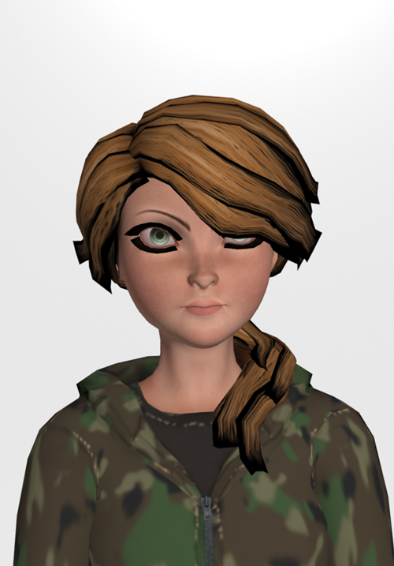

JOCELYN TORRES
Jocelyn es una médico forense, mientras trabajaba en el hospital la trinidad descubrió el misterio de la desaparición de Filemón.
Poniendo su vida en peligro se embarca en la búsqueda de la verdad que le costo la vida a Filemón.
PEDIR AHORA
Selecciona la plataforma de tu preferencia, realiza el pago, descarga el ejecutable y vive la experiencia de STILL ALIVE.
Selecciona la plataforma de tu preferencia, realiza el pago, descarga el ejecutable y vive la experiencia de STILL ALIVE.